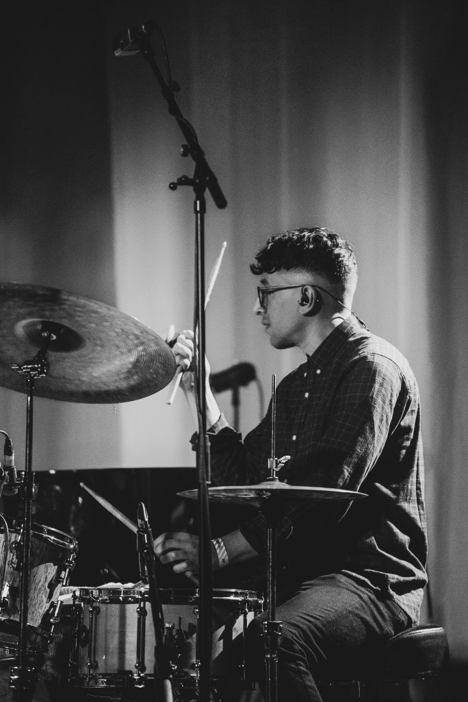

Alan Taylor
Session Drummer, Educator & Composer
About
Based in Manchester, England, Alan Taylor is a versatile drummer with a diverse musical background. His extensive resume includes collaborations with artists like multi Grammy Award-Winners Michael League, Bill Laurance, and Robert ‘Sput’ Searight (Snarky Puppy and Ghost Note respectively). Currently, Alan is a recording and touring member for the critically acclaimed Jazz trumpeter Matthew Halsall.
Beyond live performances, Alan has made contributions to theatre productions, including notable shows such as The Rocky Horror Show, The BBC Proms, and Disney’s The Lion King. In addition to live performance, Alan has worked with various internationally recognised engineers and producers seeing his works being featured across numerous mainstream television and radio broadcasts.
Further to his thriving performance career, Alan is deeply committed to sharing his love for drumming. He imparts his knowledge through teaching and masterclasses at universities across the UK and Europe and is currently part of the Popular Music and Recording faculty at The University of Salford.
Contact
astaylormusic@gmail.com